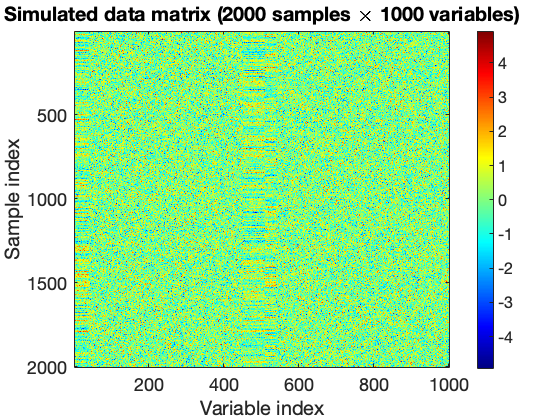
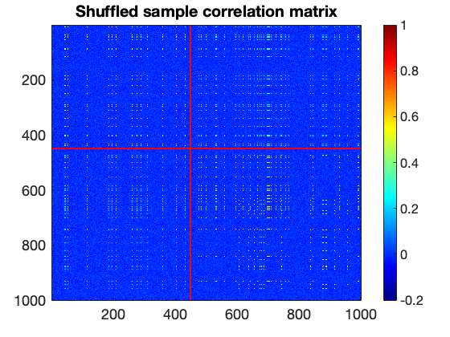
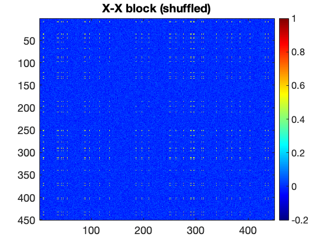
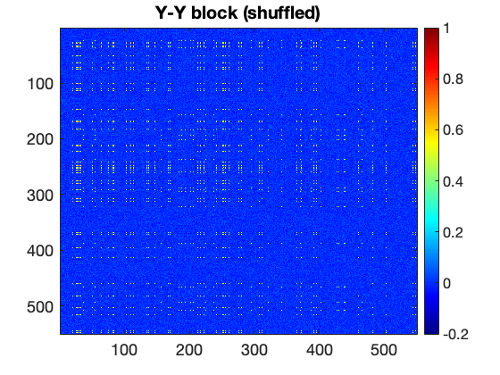
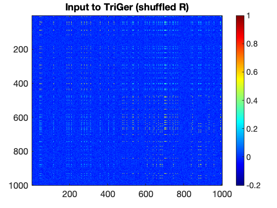
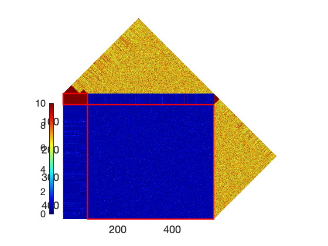
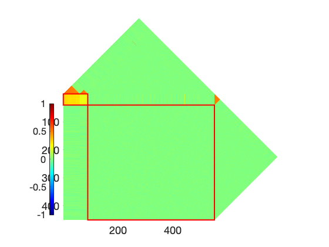

Simulation Study: TriGer Community Detection on Synthetic Data (Matrix 1)
PURPOSE Demonstrate that TriGer recovers planted bipartite communities from a shuffled sample correlation matrix, even when gene ordering is unknown.
PLANTED STRUCTURE (defined in matrix_1_generate.m, saved in matrix_1.mat) Full matrix: 1000 variables — X (indices 1:450) and Y (indices 451:1000)
Community 1 (strong): X members : genes 1–40 (40 genes), intra-correlation r = 0.5 Y members : genes 451–510 (60 genes), intra-correlation r = 0.5 Cross-corr: r = 0.3
Community 2 (weaker): X members : genes 1–40 (same 40 X genes as Community 1) Y members : genes 511–540 (30 genes), intra-correlation r = 0.5 Cross-corr: r = 0.2
WORKFLOW # Load population correlation matrix R # Sample 2000 observations from multivariate normal distribution # Compute sample correlation matrix from the 2000 observations # Shuffle gene order (simulate unknown ordering in real data) # Run TriGer (greedy_3step) on the shuffled matrix # Evaluate recovery and plot results
Contents
Load Population Correlation Matrix
matrix_1.mat contains: R — 1000x1000 population correlation matrix with planted communities m — 450 (number of X-type variables) n — 550 (number of Y-type variables) size — 1000 (total variables = m + n)
load('matrix_1.mat')
Generate Sample Data from Population Distribution
Draw 2000 observations from a multivariate normal with mean=0, covariance=R. This simulates a real omics dataset where R is the unknown true structure.
mu = zeros(1, size); data = mvnrnd(mu, R, 2000); % Compute sample Pearson correlation and p-values from the simulated data. % This is what TriGer receives — the true R above is never used directly. [sample_R, sample_P] = corr(data, 'Rows', 'pairwise'); % Visualise the raw data matrix (samples x variables) figure; imagesc(data); colorbar; colormap(jet(256)); title('Simulated data matrix (2000 samples \times 1000 variables)'); xlabel('Variable index'); ylabel('Sample index');

Shuffle Gene Order
In real omics data the gene ordering is arbitrary and contains no information. We randomly permute X and Y indices independently to simulate this. TriGer must recover the community structure without knowing the true order.
shuffle_X_idx = randperm(450); % Random permutation of X indices (1:450) [~, org_X_idx] = sort(shuffle_X_idx); % Inverse permutation — recovers original X order shuffle_Y_idx = randperm(550) + 450; % Random permutation of Y indices (451:1000) [~, org_Y_idx] = sort(shuffle_Y_idx); % Inverse permutation — recovers original Y order % Combined permutation index for the full 1000-variable matrix shuffle_idx = [shuffle_X_idx, shuffle_Y_idx]; org_idx = [org_X_idx, org_Y_idx + 450];
Apply Shuffle to Sample Correlation Matrix
Zero out the diagonal before shuffling — self-correlation is uninformative.
sample_R(1:size+1:end) = 0; % Reorder rows and columns by the shuffled index. % This produces a matrix where community structure is hidden. shuffle_R = sample_R(shuffle_idx, shuffle_idx); shuffle_P = sample_P(shuffle_idx, shuffle_idx); shuffle_P = -log10(shuffle_P); % Convert p-values to -log10 scale % Plot shuffled matrix — communities are no longer visible as blocks. % The red lines mark the boundary between X (rows/cols 1:450) and Y (451:1000). figure; imagesc(shuffle_R); colorbar; colormap(jet(256)); caxis([-0.2, 1]); ax = gca; ax.FontSize = 18; title('Shuffled sample correlation matrix'); hold on; line([0 1000], [450 450], 'Color', 'r', 'LineWidth', 2); % X-Y boundary (row) line([450 450], [0 1000], 'Color', 'r', 'LineWidth', 2); % X-Y boundary (col) hold off; % Plot X-X and Y-Y blocks separately for reference figure; imagesc(shuffle_R(1:450, 1:450)); colorbar; colormap(jet(256)); caxis([-0.2, 1]); ax = gca; ax.FontSize = 18; title('X-X block (shuffled)'); figure; imagesc(shuffle_R(451:1000, 451:1000)); colorbar; colormap(jet(256)); caxis([-0.2, 1]); ax = gca; ax.FontSize = 18; title('Y-Y block (shuffled)');



Run TriGer: Community Detection on Shuffled Matrix
greedy_3step simultaneously analyses the X-X, Y-Y, and X-Y blocks. Parameters: lambda_XY=1, lambda_X=1.8, lambda_Y=1.8 size constraints: X in [10,50], Y in [10,50]
figure; imagesc(shuffle_R); colorbar; colormap(jet(256)); caxis([-0.2, 1]);
ax = gca; ax.FontSize = 18;
title('Input to TriGer (shuffled R)');
result = greedy_3step(shuffle_R, shuffle_R, m, n, 1, 1.8, 1.8, [10, 50], [10, 50]);
Round 1 ****************** Round 2 ****************** Round 1 ****************** Round 2 ****************** Round 3 ******************

Post-process Detected Result
result{1,2} currently contains Y indices in the full 1:1000 space. Subtract 450 to convert to Y-local indices (1:550).
result{1, 2} = result{1, 2} - 450;
% Define a complement cluster: all X and Y genes NOT in the detected community.
% This serves as the background group for visualisation.
result{2, 1} = setdiff(1:450, result{1, 1});
result{2, 2} = setdiff(1:550, result{1, 2});
result(end+1, :) = {[], []}; % Terminating empty row required by plot functions
Visualise Detected Communities
plot3in1_v1 shows three panels: Y-Y, X-X, and Y-X blocks, with rows/columns reordered so detected communities appear as visible blocks.
% Using significance matrix (-log10 p): highlights statistically significant pairs plot3in1_v1(shuffle_P(451:1000, 451:1000), shuffle_P(1:450, 1:450), ... shuffle_P(451:1000, 1:450), result, true, [200, 100], true); % Using correlation matrix: shows the magnitude of co-expression within communities plot3in1_v1(shuffle_R(451:1000, 451:1000), shuffle_R(1:450, 1:450), ... shuffle_R(451:1000, 1:450), result, true, [200, 100], true);

